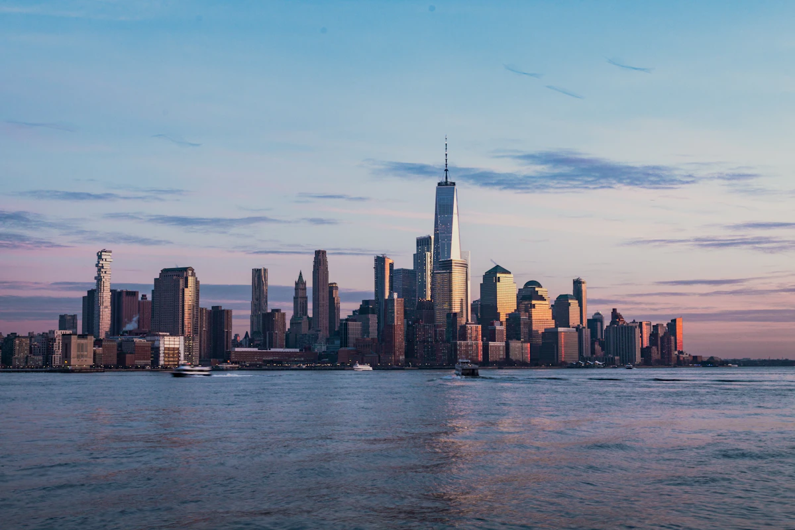
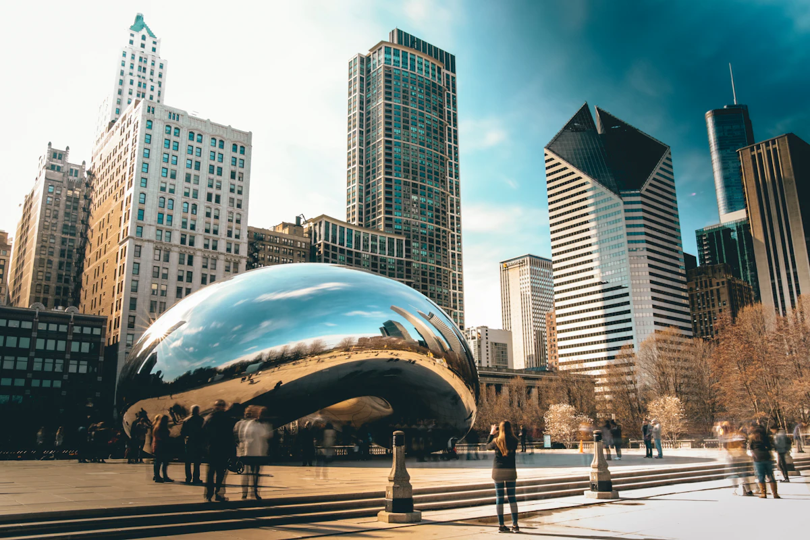
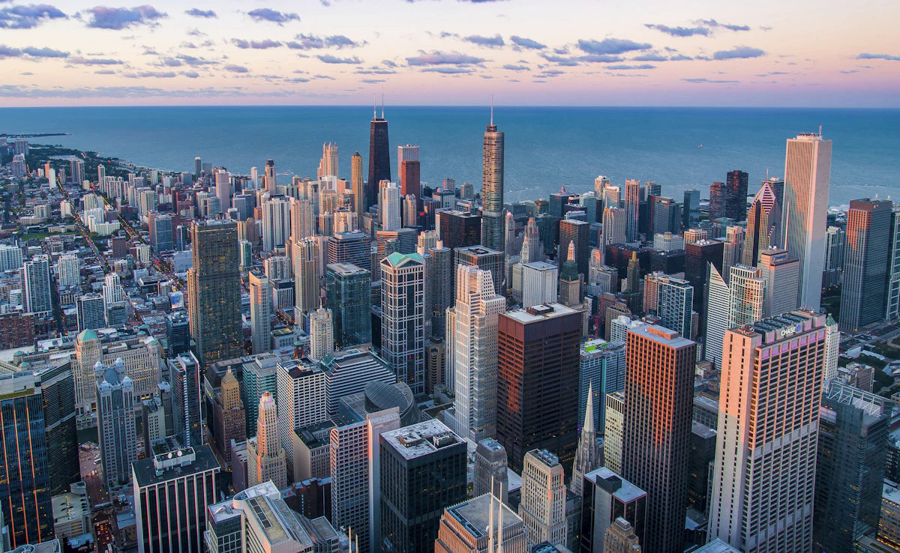
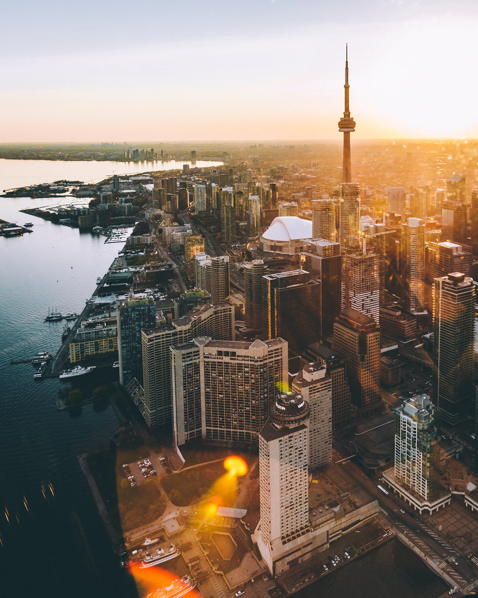
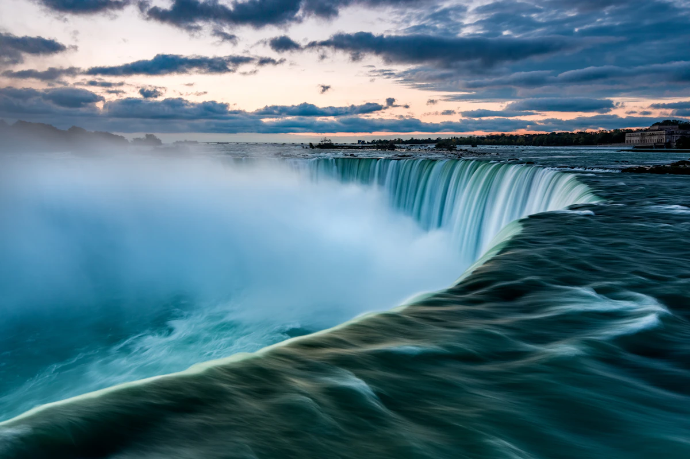
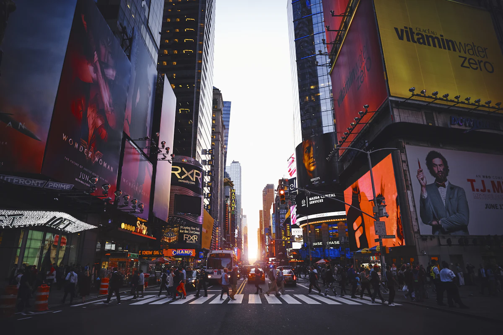

Como ya la conocen, esta vez sin checklist de turista: Brooklyn a fondo (Williamsburg, Dumbo, el atardecer desde Brooklyn Heights Promenade), el West Village y Lower East Side de noche, la High Line completa terminando en Little Island, y un musical de Broadway que reserven antes de viajar. Si hay partido de los Yankees o de los Knicks en fecha, es un programa imperdible. Y los rooftops del verano neoyorquino: empezar la noche con un drink mirando el skyline no envejece nunca.

La gran subestimada de EEUU. El river cruise de arquitectura es lo primero que tienen que hacer — en serio, es de las mejores experiencias urbanas del país y les ordena la ciudad para el resto de los días. Después: el Millennium Park con el Bean, el Art Institute (uno de los 3 mejores museos de América), caminar el Riverwalk al atardecer, deep dish pizza en Lou Malnati's, y blues en vivo en Kingston Mines o Buddy Guy's Legends. Un día para los barrios: Wicker Park y Logan Square, donde está el Chicago real. En mayo-junio la ciudad explota de vida y el lago Michigan parece un mar.


La ciudad más multicultural del mundo — más de la mitad de sus habitantes nació fuera de Canadá, y eso se come: en una misma tarde pasás de dumplings en Chinatown a shawarma libanés en Kensington Market. Imperdibles: la CN Tower (si se animan, el EdgeWalk caminando por el borde exterior), el St. Lawrence Market para desayunar, el Distillery District con sus galerías en edificios victorianos, y el ferry a las Toronto Islands para la mejor vista del skyline. El tercer día queda libre para barrios: Queen West, Ossington, o un partido de los Blue Jays si hay fecha.

Dormir en Niágara vale completamente la pena: de noche las cataratas se iluminan de colores (y en temporada hay fuegos artificiales sobre el agua), y a la mañana siguiente las ven sin las multitudes de los tours de día. Lo imprescindible: el crucero Hornblower que te mete hasta la base de la Herradura (sí, te empapás, sí, vale la pena), el Journey Behind the Falls por los túneles detrás de la cortina de agua, y un paseo por Niagara-on-the-Lake, un pueblito victoriano a 20 minutos rodeado de viñedos — la región produce icewine, el vino dulce de uvas congeladas que es especialidad canadiense.

La última noche del viaje, de vuelta en la ciudad que más aman. Sin agenda: una cena de despedida en ese restaurante que quedó pendiente, un último paseo nocturno por donde les pinte — Times Square iluminado, el puente de Brooklyn, o simplemente el barrio del hotel. Al día siguiente, vuelo a casa descansados y sin el riesgo de hacer la conexión internacional el mismo día que vuelan desde Canadá.
